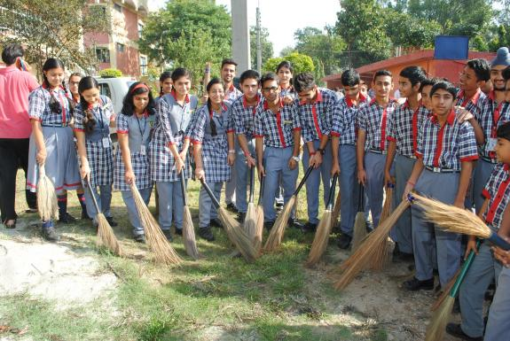

Swaccha Bharat Abhiyaan

Swachh Bharat Mission (SBM), Swachh Bharat Abhiyan, or Clean India Mission is a country-wide campaign initiated by the Government of India in 2014 to eliminate open defecation and improve solid waste management. It is a restructured version of the Nirmal Bharat Abhiyan launched in 2009 that failed to achieve its intended targets.[2][3] Phase 1 of the Swachh Bharat mission lasted till October 2019. Phase 2 will be implemented between 2020–21 and 2024-25.[4]
Initiated by the Government of India, the mission aimed to achieve an "open-defecation free" (ODF) India by 2 October 2019, the 150th anniversary of the birth of Mahatma Gandhi.[5] The objectives of the first phase of the mission also included eradication of manual scavenging, generating awareness and bringing about a behavior change regarding sanitation practices, and augmentation of capacity at the local level. The second phase of the mission aims to sustain the open defecation free status and improve the management of solid and liquid waste.[6] The mission is aimed at progressing towards target 6.2 of the Sustainable Development Goals Number 6 established by the United Nations in 2015.
The campaign's official name is in Hindi. In English, it translates to "Clean India Mission". The campaign was officially launched on 2 October 2014 at Rajghat, New Delhi by Prime Minister Narendra Modi. It is India's largest cleanliness drive to date with three million government employees and students from all parts of India participating in 4,043 cities, towns, and rural communities. At a rally in Champaran, the Prime minister called the campaign Satyagrah se Swachhagrah in reference to Gandhi's Champaran Satyagraha launched on 10 April 1916.[7]
The mission was split into two: rural and urban. In rural areas "SBM - Gramin" was financed and monitored through the Ministry of Drinking Water and Sanitation; whereas "SBM - urban" was overseen by the Ministry of Housing and Urban Affairs.[8][9][10][11]
As part of the campaign, volunteers, known as Swachhagrahis, or "Ambassadors of cleanliness", promoted indoor plumbing and community approaches to sanitation (CAS) at the village level.[7] Other activities included national real-time monitoring and updates from non-governmental organizations such as The Ugly Indian, Waste Warriors, and SWaCH Pune (Solid Waste Collection and Handling).[12]
The government provided subsidy for construction of nearly 110 million toilets between 2014 and 2019,[13][5] although some Indians especially in rural areas choose to not use them.[14] The campaign was criticized for using coercive approaches to force people to use toilets.[15] Some people were stopped from defecating in open and threatened with withdrawal from government benefits.[16] The Government of India released 40,700 crore funds, under Swachh Bharat Mission, for achieving waste management in 200,000 villages.
.jpg)